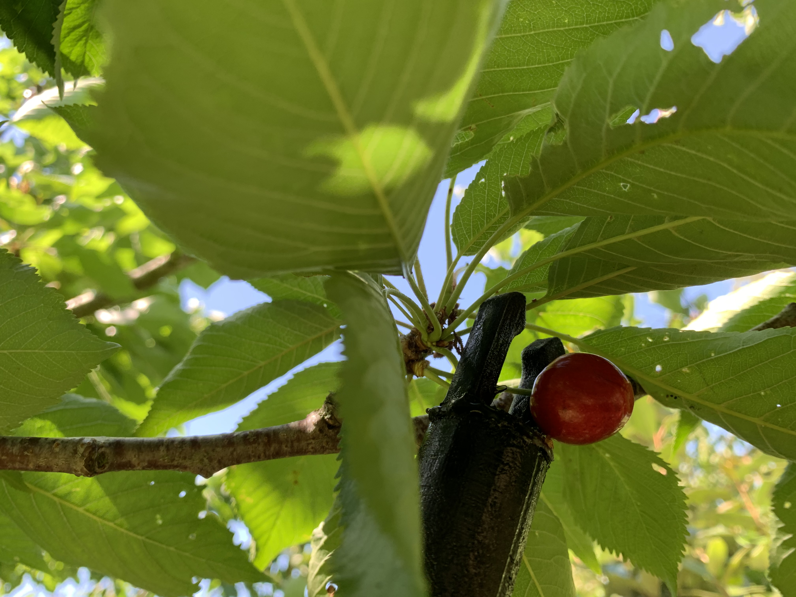
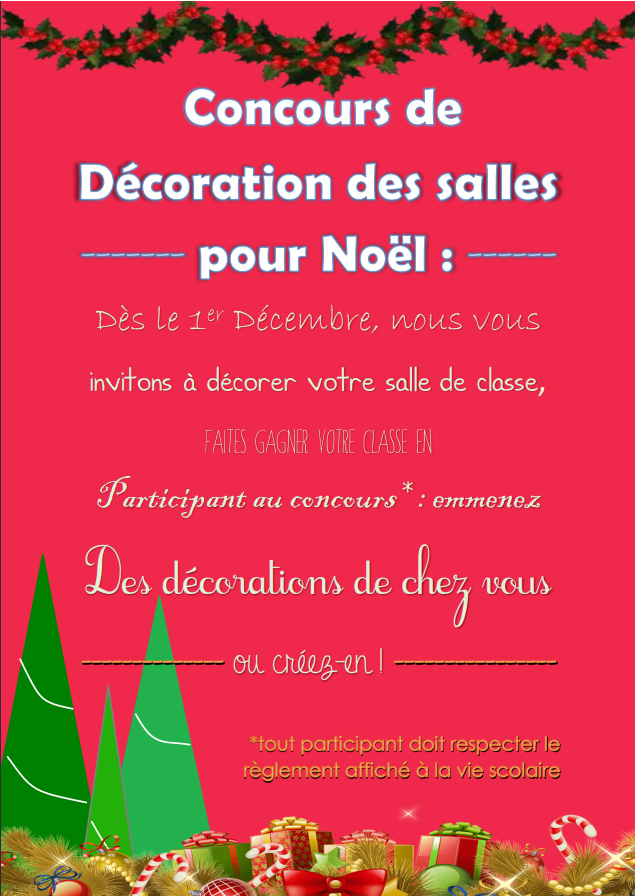
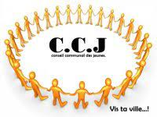
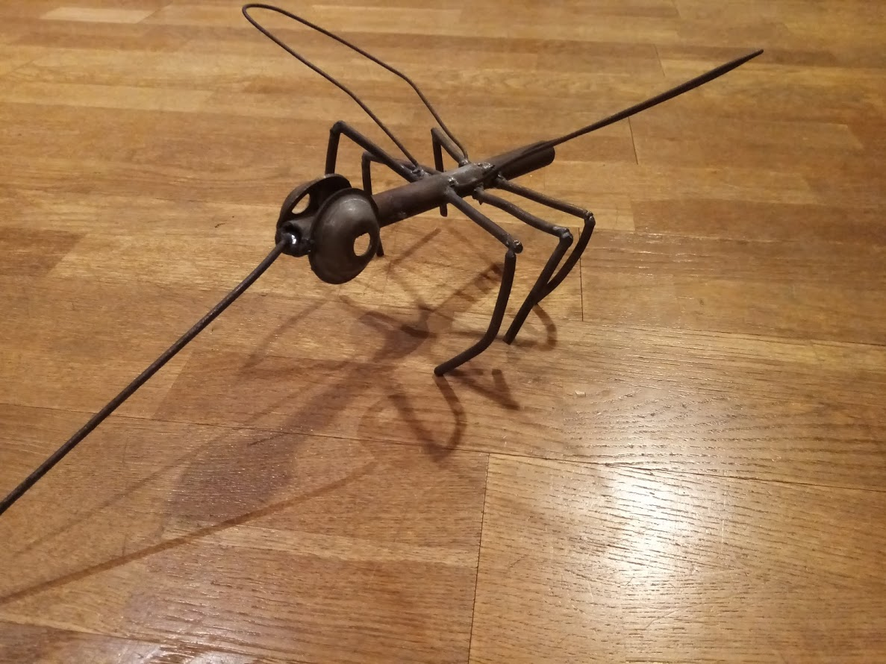

MES PROJETS
Voici quelques-uns de mes projets les plus aboutis:
Le Cherry Catcher
J'ai conçu cet objet en impression 3d pour attraper des cerises haut dans les arbres en profitant de la longueur des manches des balais à piscine, son utilisation est très simple: on clipse le Cherry Catcher au manche, et en mettant la cerise entre les deux embouts puis avec un mouvement de sublimation, on casse la liaison entre la cerise et sa tige, celle-ci est donc amenée à tomber.
on clipse le Cherry Catcher au manche, et en mettant la cerise entre les deux embouts puis avec un mouvement de sublimation, on casse la liaison entre la cerise et sa tige, celle-ci est donc amenée à tomber.

{kind=link}
Le Light Switch
Ce projet qui mélange l'impression 3d et l'arduino (électronique) est destiné à éteindre mon interrupteur de lumière à distance à l'aide d'une télécommande. Il est constitué d'un arduino : le microcontrôleur, d'un servomoteur (pour appuyer sur le bouton) et d'un récepteur infrarouge pour recevoir les messages de la télécommande, puis enfin d'un boîtier sur mesure que j'ai imprimé en 3d. Voici une image des branchements:
Le Concours de Décoration de Noël
Lors du Noël dernier, nous avons, l'autre déléguée de ma classe et moi, décidé d'organiser dans notre collège un concours de décoration des salles pour Noël. Étant donné qu'avec la crise sanitaire ce n'était plus les élèves qui changeaient de salle mais les professeurs, le concours se fit donc classe par classe. Nous sommes d'abord allés voir des personnes hauts-placées dans le collège pour proposer le projet, nous sommes allés voir le principal adjoint qui nous a donc épaulé tout au long projet. Après cela nous avons décidé d'en parler aux professeurs en allant à la salle des professeurs. Par la suite nous avons rédigé un règlement et j'ai créé une affiche que vous pouvez voir ci-contre:
tout le collège a donc participé et après une visite chez la gestionnaire, nous avons pu donner des lots (chocolats) aux gagnants qui ont été élus par un jury constitué de professeurs et de personnels de l'établissement. Ce projet a été très formateur sur le fait d'impacter tout le collège ce dont on était fiers.
{kind=link}
MES COMPÉTENCES
Chacun de ces projets est l'aboutissement de l'apprentissage de compétences: le Cherry Catcher est par exemple ma première modélisation 3d. Je peux donc dire avoir comme compétences:
-
-la modélisation 3d (avec Fusion360) suivi de l'impression 3d
-l'électronique
-le travail des matières comme le bois et le métal comme évoqué plus tard dans la partie "mon expérience"
-j'ai appris à coder en html et css pour l'occasion de la création de ce site
-je cuisine très souvent et c'est devenu un passe-temps
-j'ai perfectionné des compétences graphiques suite à une passion pour le dessin comme je l'évoque aussi dans la partie "mon expérience"
Toutes ces compétences ont plus ou moins en commun la création, et j'aimerais les renforcer avec les très diverses compétences que vous enseignez dans votre lycée.
MON EXPÉRIENCE
Pour m'aider et pour appronfondir mes compétences je me suis inscris à plusieurs associations qui se sont montrées formatrices par rapport à mes attentes:
Conseil communal des jeunes
j'ai longtemps fait partie d'une association nommée le CCJ (Coneil communal des jeunes) constitué d'agents communaux et de jeunes de la commune adhérents, ce conseil a pour but de faire des projets communaux organisés par les jeunes et supervisés par des agents communaux. Cela peut aller d'évènements comme des courses d'orientation touristiques ou des interventions dans l'école de Chasseneuil ou même la mise en place d'installations dans la commune. Par exemple, il nous est arrivé de faire un rallye touristique, j'ai été mis en charge de sponsoriser l'évènement notamment pour faire gagner des lots aux gagnants, j'ai par exemple récolté des lots de la part du Futuroscope. Cette expérience m'a permis d'apprendre la gestion de projets et le travail de groupe.
La Regratterie, recyclerie créative
j'ai également pu bénéficier de formation en métallurgie grâce à une association, la Regratterie dont je fais partie, cette association est constituée de créateurs qui profitent des machines à disposition ainsi que du savoir des autres, certains font donc des formations complètes pour apprendre aux autres ce qu'ils savent. J'ai bénéficié de 2 d'entres-elles: une formation soudure et une forge. Ces compétences, je les réutilise souvent en métallurgie. Je vous ai mis la photo d'une de mes créations.
{kind=link}
Visières 3d
Pendant le 1er confinement j'ai décidé de m'inscrire à une association nommée Shield visière 86 avec pour but d'imprimer en 3d le plus de visières pour les soignants et personnels dans le besoin étant donnée la pénurie de masques de cette période. Tous les particuliers en possession d'imprimante(s) 3d étaient donc invités à rejoindre l'association. J'ai à moi seul imprimé environ 250 visières et l'association a donc imprimé plus de 14 000 visières pour :
-
-le CHU
-les EPHADs
-les pharmacies
-etc.
j'ai reçu en récompense à cette interventions un label "maker citoyen" que vous pouvez voir en image:

Ce fut donc une expérience très formatrice sur le plan de la contribution à un projet et il fut plaisant de se sentir utile pendant ce confinement.
Travail Graphique et Dessin
Toute mon enfance j'ai développé une passion pour le dessin, seulement j'ai fini par trouver cela lassant et j'avais besoin de changement, je me suis donc mis au dessin informatique par le biais de photoshop et illustrator, des logiciels d'édition graphique, ce qui m'a donc permis de me perfectionner dans le domaine graphique. je vous ai mis un de mes dessins papiers en image.
des logiciels d'édition graphique, ce qui m'a donc permis de me perfectionner dans le domaine graphique. je vous ai mis un de mes dessins papiers en image.